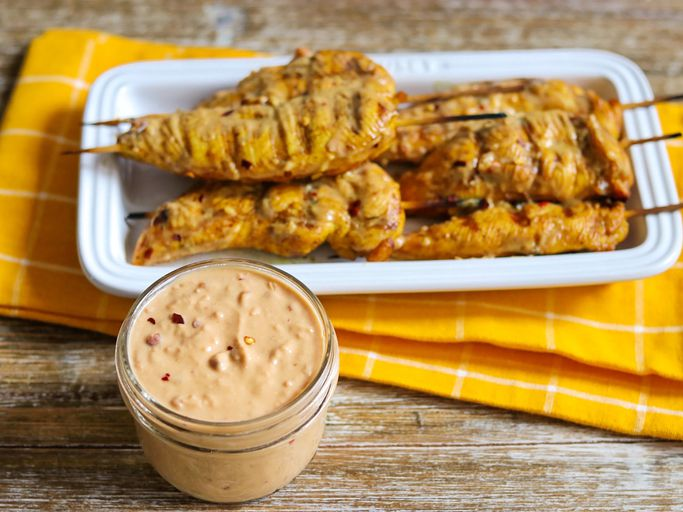

Padthai

Description
This satay sauce is a wonderful Thai-style sauce that you can easily make at home. Perfect for serving with grilled chicken skewers.
Ingredients
- 1 (10 ounce) can coconut milk
- ½ cup crunchy peanut butter
- ½ small onion, grated
- 1 tablespoon dark soy sauce
- 2 teaspoons brown sugar
- ½ teaspoon red pepper flakes
Instructions
- Combine coconut milk, peanut butter, onion, soy sauce, brown sugar, and pepper flakes in a saucepan over medium heat. Bring to a boil, stirring frequently. Remove from heat, and keep warm.
Back